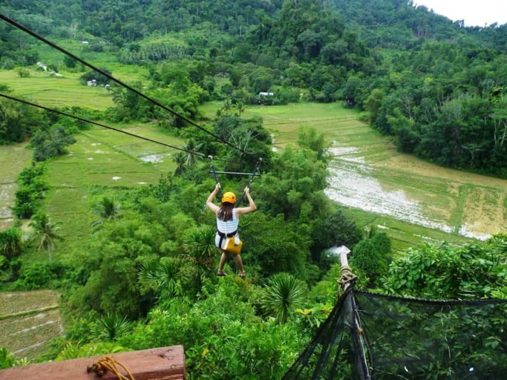

PALAWAN ITINERARY:
ULTIMATE TRAVEL GUIDE
Our list of the best things to do in Palawan comprises just a few of the must-visit places at hand in the largest province of the Philippines. Covering an area of 14,650 sq km and over 1,700 islands, Palawan Province marks the western border of the country. This huge territory features so many stunning areas that it's a tough task to pick out a manageable amount from the huge choice of stunning attractions on offer.
Palawan has only recently become a popular spot for international tourists, thanks mainly to the scuba divers who were the first visitors from abroad to explore this area. Nowadays, names such as El Nido, Coron, and Puerto Princesa have started to be well-known among travellers, and many of the popular attractions in Palawan belong to these 3 prime destinations in the province.
Traveling – it leaves you speechless,
then turns you into a storyteller
- Island Hop in Honda Bay
- Scuba Diving in El Nido
- Ugong Rock Adventures
- Visit Port Barton
- Beaches of El Nido
-
Some of the most beautiful beaches in the entire world can be found in the north of Palawan in the province of El Nido. Literally, every beach is more beautiful than the next with white powdery sand, turquoise water, and many surrounded by unique towering limestone cliffs.

Visit Secret Beach tucked away in a hidden cove, Nacpan Beach which is 4-kilometers of smooth sand and coconut trees, Pangalusian Beach that looks like a post card, Las Cabanas Beach with warm water perfect for swimming, and the list goes on.
- Underground River
At 8.2 kilometers of winding water, this is one of the longest underground rivers in the world! Officially labeled the ‘7th New Wonder of the Natural World’, the underground river in Palawan is a must-do.
You’ll take a short hike through the jungle where monkeys will come out and beg you for snacks, and then you’ll reach small boats at the mouth of the cave. Climb in and you’ll paddle together through complex cave tunnels with hanging bats and calm waters. You’ll learn all about the formations from your friendly guide as you go.
Recognize that these tours are so popular that they can be full for a few days in advance. Plan your trip now by booking with a tour group online.
45-minutes from the capitol of Palawan, Honda bay offers an island hopping tour that will make all of your vacation dreams come true.
You’ll explore Pandan Island, Cowrie Island, Luli Island, Starfish Island, and Verde Island where the famous Dos Palmas resort is located. All of these islands offer out-of-this-world white sand beaches with turquoise water so beautiful that that you might get a little emotional.

You can spend the whole day island hopping in Honda Bay where you’ll have the opportunity to snorkel, explore the inland of the islands, and splash around in the water. These tours typically provide lunch and snacks for your trip.
If you think what you’re seeing above ground is amazing, take a dive underwater in Bacuit Bay.
It’s no surprise that dive sites around El Nido are rich in marine life and thrilling topography including a 50-meter underwater cliff and a 12-meter underwater tunnel. Expect to see animals such as spotted Mata Rays and fully-grown green sea turtles. Take a night dive and you’ll see even more elusive creatures such as seahorses, shrimp and cat sharks.
You can take any and all of the diving courses here for pretty decent prices.
Ugong Rock is a natural formation just north of Puerto Princessa that is beautiful, wild, and makes a funny noise when you tap it. Ugong Rock Adventures is a tour company that has built a triple threat of exhilarating fun around this formation and travelers love it.

Crawl in and out of rock caves with spelunking, climb up to the zipline as it catapults you through the jungle at high speeds, and trek through the jungle on some strategic trails that lead to incredible views.
Venture over to Port Barton, a sleepy fishing town on the North West coast of Palawan. Think of Port Barton as a less trendy, less crowded version of El Nido where you enjoy all of the same attractions for half the price.
Go kayaking on the sea, explore rocky cliff sides, get a good tan while laying on a sandy beach- you get the picture. See how locals live as they fish, take their buffalo on a walk, or head to school.
You can find plenty of budget accommodation here at the expense of electricity. That is, there isn’t any. Most guesthouses in Port Barton run on generators that turn off at night. No fans and no ATMs, either.